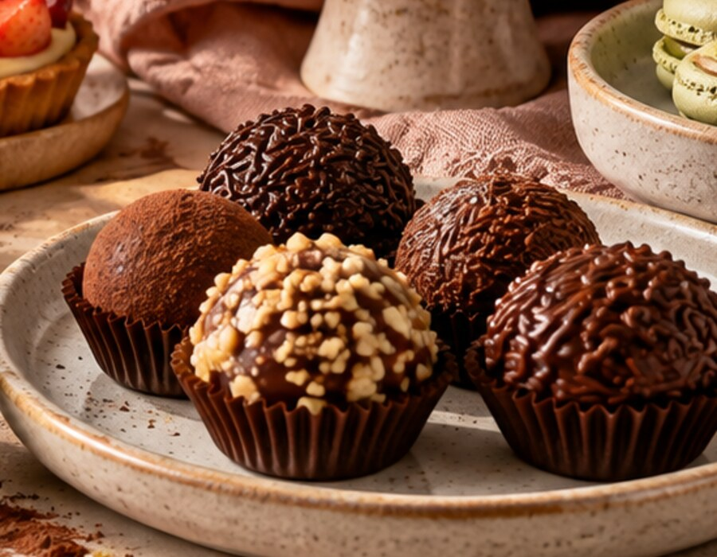
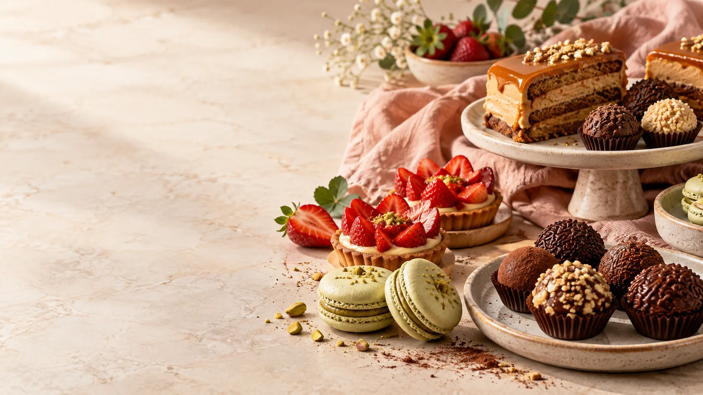
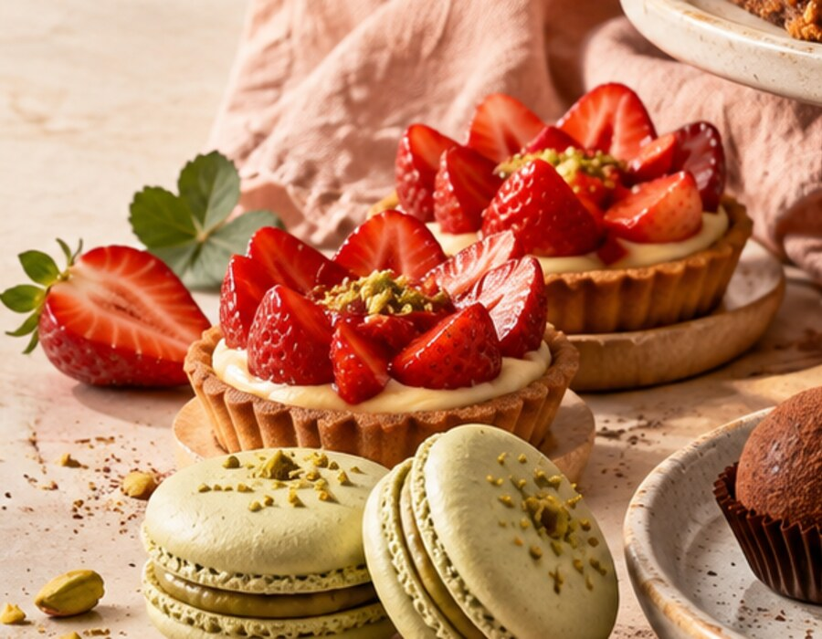
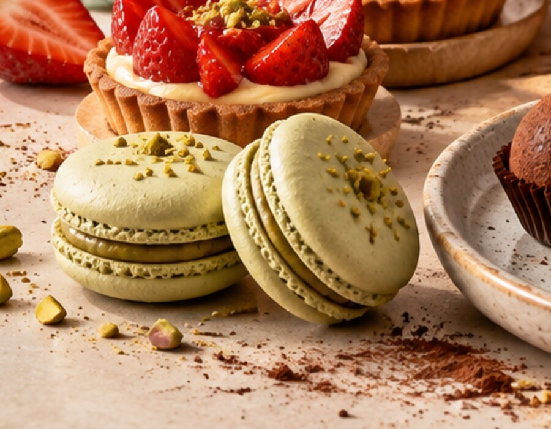
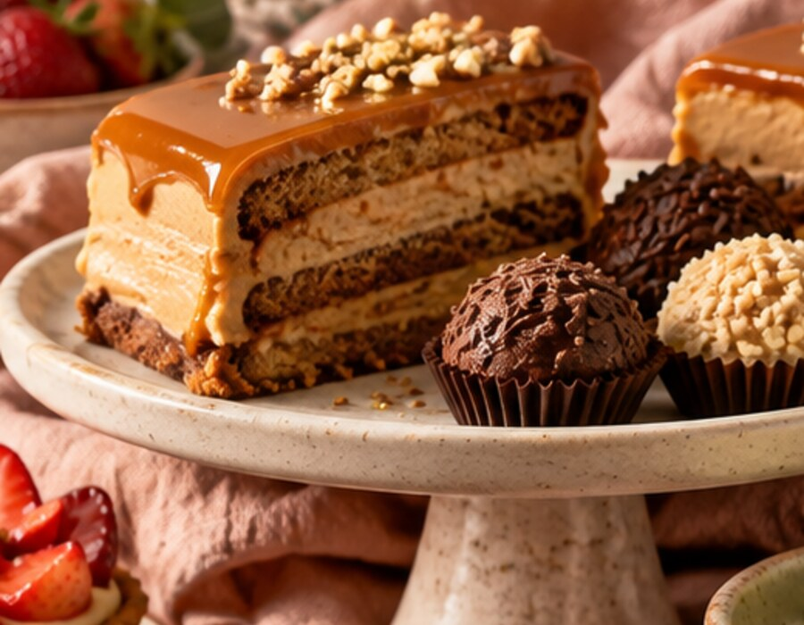

Brigadeiros Gourmet
Caixa Afeto
Seleção de 12 brigadeiros finos feitos com autêntico chocolate belga, pistache iraniano e flor de sal.

Confeitaria Artesanal em Sorocaba
Receitas de família preparadas com ingredientes nobres, morangos frescos e chocolate belga legítimo. O ponto de encontro dos apaixonados por doces em Sorocaba desde 2009.
Ingredientes Nobres Selecionados
Produção Diária e Artesanal em Sorocaba
Receitas Tradicionais desde 2009
Entrega Rápida e Embalagens Especiais
Nossas Criações

Seleção de 12 brigadeiros finos feitos com autêntico chocolate belga, pistache iraniano e flor de sal.

Massa folhada amanteigada, creme aveludado de baunilha de Madagascar e morangos frescos de produtores locais.

Seis macarons franceses delicados com farinha de amêndoas, ganache de chocolate branco e toque de flor de laranjeira.

Pão de ló de cacau black, brigadeiro toffee aveludado e praliné de castanhas de caju crocantes.
Opinião de Quem Provou
"O melhor bolo de Sorocaba com certeza! Comprei para o aniversário da minha mãe e todos elogiaram o equilíbrio do recheio. Maravilhoso!"
"Ambiente agradável e atendimento excepcional. Os brigadeiros gourmets são fora de série, dá pra sentir que os ingredientes são de primeira qualidade."
"Sou cliente há mais de 5 anos da Elda. Seja para uma sobremesa rápida no fim de semana ou festa de família, nunca decepciona!"
"A tartelette de morango é espetacular, massa crocante e fruta fresca de verdade. Recomendo a todos em Sorocaba e região!"
Venha nos Visitar
Endereço: Av. Dr. Afonso Vergueiro, 2548
Vila Augusta • Sorocaba/SP • CEP 18040-000
Atendimento: Segunda a Sábado das 9h às 19h